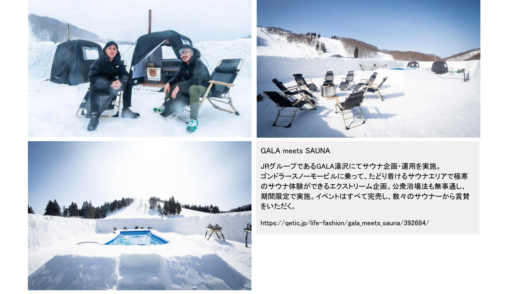

観光 / 健康・スポーツ / サウナ
GALA meets SAUNA


PROJECT INFORMATION
GALA湯沢を開催地とする「GALA meets SAUNA」。サウナの企画・運用を担当した実績です。
01 / 背景とテーマ
輪郭を与える
スキー場は冬のもので、滑らない人には用がない場所でした。その前提を外し、雪山という環境そのものを味わうための装置としてサウナを置いた企画です。
02 / SCHEMAの担当範囲
全体を整える
SCHEMAは設計・企画からデザイン、イラストまでを担当。ゴンドラとスノーモービルを乗り継いだ先にサウナエリアをつくるという構成を組み立て、公衆浴場法の確認まで通して実施にこぎつけました。
03 / 取り組みの視点
枠組みをひらく
極寒の中で温まって、雪に飛び込む。期間限定の開催はすべて完売し、雪山の使い方そのものを広げる提案になりました。滑らない人がスキー場へ行く理由をつくった取り組みです。